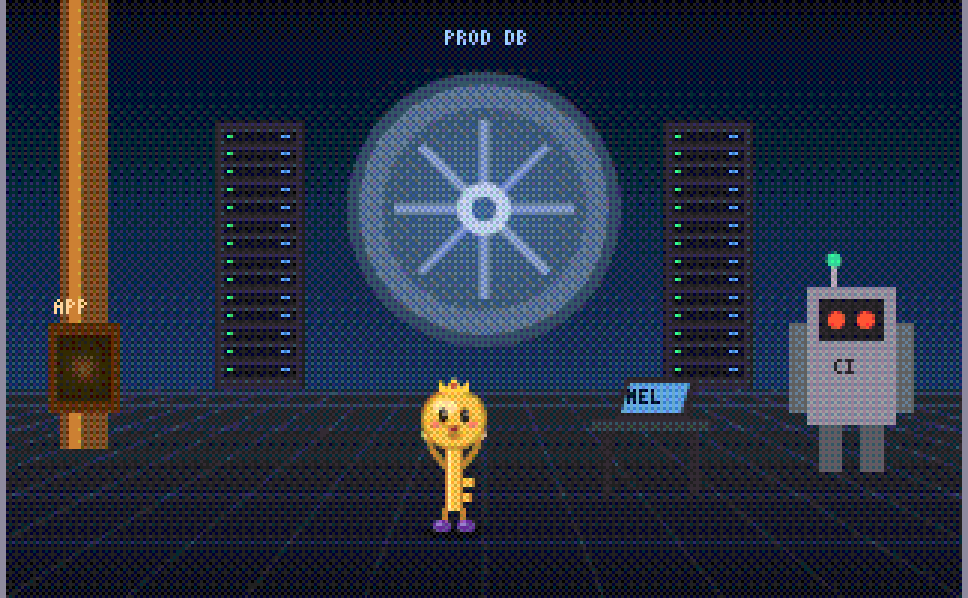
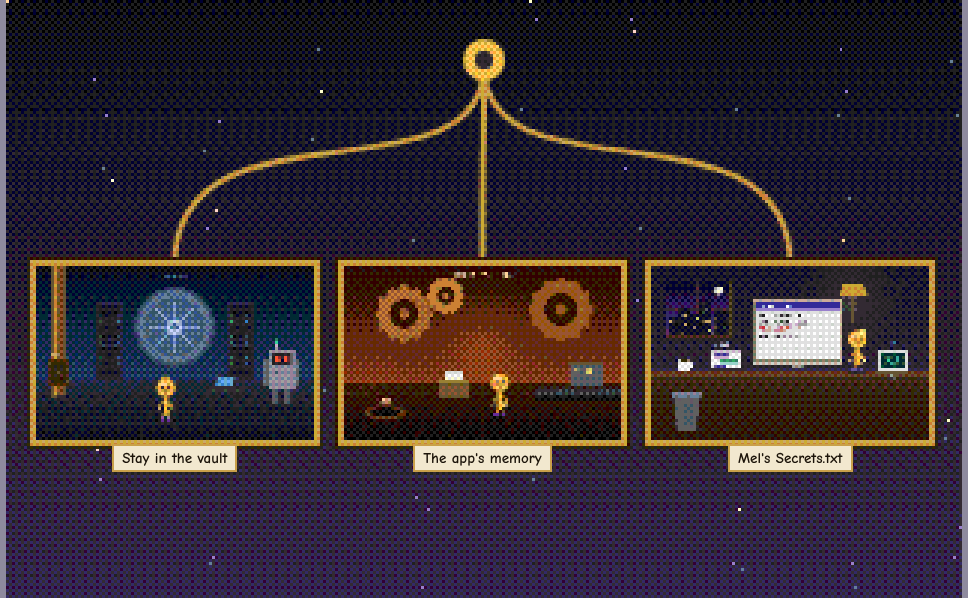
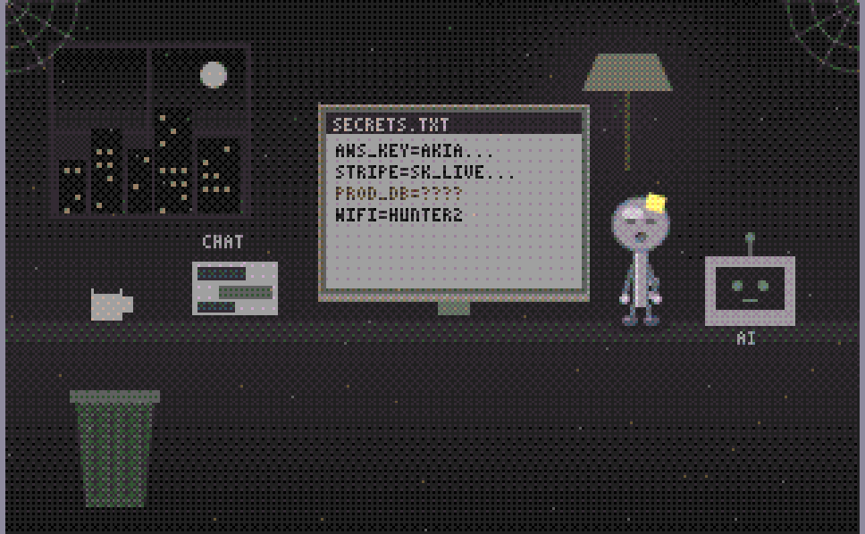

A very short life story, eleven times
The Little Key The Branching History of a Key
A production database key is born. It's 528 bytes, it can read everything, and it can't wait to help. It never finds out that it gets copied. You do.
▶ Play The Little KeyFree. Runs in your browser, on desktop or phone. About 15 minutes for every ending. No sign-up.

What is this?
Every secret that leaks was copied first. Into a text file "just for now." Into team chat for a coworker. Into the wiki, the build config, an AI chat, a container image. Each copy works exactly as well as the original, and none of them knows the others exist.
This game follows those copies, one at a time, from the key's own point of view. It's cheerful and has no idea anything is wrong. When the key is finally revoked, nobody tells it. It just sits there, grey and useless, in a drawer or a scrollback or a layer of an old image, sometimes for years, until the system around it is finally wiped. For the key, that's a happy day.
The Little Key, in Secrets.txt, year fourOh! Everything is going white and soft. I get to stop now. What a happy day.
Who it's for
- Developers who have pasted a key somewhere "just for a minute."
- Anyone new to secrets security who wants to understand sprawl without a lecture.
- Security teams looking for a five-minute way to explain why deleting a copy isn't revoking a key, and why revoking isn't the end.
Everything is made up. The game is one web page. It contacts no real system, and Mel, the company and its key are fictional.


How it plays
There are no menus and no verbs. Click anywhere to live through the key's life. Click the key itself to poke it. It always has something to say.
The key never makes a choice. Things just happen to it. Your only choice comes when the key is copied. The screen splits, and you pick which key to follow:
- Back steps back one line. Back to the last split jumps to the last place the story forked, so you can follow a different key.
- Each key keeps its own story. When you follow a new copy, it wakes up somewhere new, thinking it's the only one.
- Every life ends with a ring. The rings you find are kept in your browser.
- Keyboard: Enter or → to continue, ← to go back, P to poke.
The eleven rings
Every key wears its own ring. You get it when that key's life is over.
- Golden RingThe original, in the vault
- Moment RingThe app's memory
- Notepad RingSecrets.txt
- Party RingTeam chat
- Bookmark RingThe wiki
- Prompt RingThe AI assistant
- Fork RingA public repository
- Hoodie RingA stranger's laptop
- Birthday RingA brand new key
- Hard Hat RingThe build pipeline
- Onion RingA container image
What the endings are about
- A copy works exactly like the original. Same bytes, same permissions, wherever it ends up.
- Revoking stops every copy at once, but it removes none of them. They stay in files, chats, wikis, logs and image layers until those systems are deleted.
- Deleting the copy you can see doesn't touch the ones you can't. Forks, clones and old layers keep their copy.
- Revoking a key doesn't remove what was built with it. One ending is about an account an attacker created, with a brand new key of its own.
The family
It's the newest of three games built on the same retro engine. Lossy Inc is the full week-long incident range. Don't Break Prod is one long quest about getting a fix signed off. The Little Key is the short one, from the secret's side.